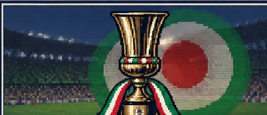
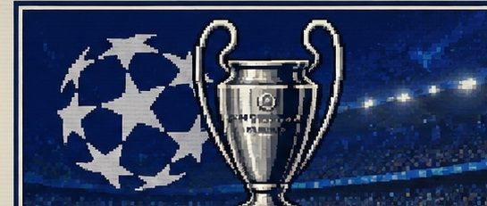
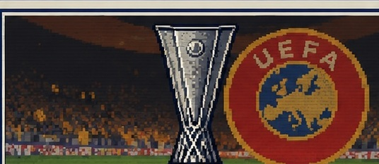
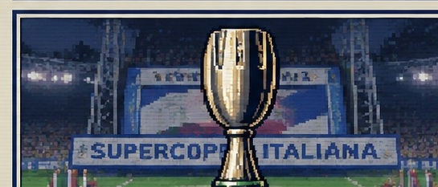

MODALITÀ COPPE

COPPA ITALIA▶

COPPA DEI CAMPIONI▶

COPPA UEFA▶

SUPERCOPPA▶
COPPA
BLOCCATALe coppe vengono sbloccate dai risultati ottenuti nella modalità Carriera.
ULTIM'ORA — SERIE A
UNA PANCHINA È APPENA DIVENTATA LIBERA.
LA STAGIONE PRECEDENTE È STATA DELUDENTE.
Il club non ha ottenuto la qualificazione europea e la società ha deciso di cambiare guida tecnica.
Ora vuole ripartire da te. Il primo obiettivo è riconquistare l'Italia. L'Europa dovrà essere guadagnata sul campo.
COME SI CHIAMA IL NUOVO ALLENATORE?
CAMPIONATOSERIE AGIRONI A · B
PRE-PARTITA
Modulo
Atteggiamento
Formazione
Battitori
SCELTA DIVISE
Scegli le divise con cui le due squadre scenderanno in campo.
CASA
VS
OSPITI
CONTRASTO DIVISE: CONTROLLATO ✓
RIEPILOGOSTATISTICHECAMPO 2DCRONACA
00'
Le squadre stanno entrando in campo...
● LIVEDIRETTA DALLO STADIOSERIEA 9000 SIM